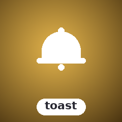

SugarToast
Floating notification overlays

Non-blocking floating notifications at 9 screen positions. Error, Warning, Info, Success types. Auto-dismiss, an Escape-dismiss preference flag for hosts, and stacked multi-toast support. Severity never rides colour alone: each type carries a distinct symbol, withAccessibleText() adds the plain-text word, and the REDUCE_MOTION/NO_COLOR environment gates drop blink and colour bytes while those text channels keep rendering.
Install
composer require sugarcraft/sugar-toastQuickstart
use SugarCraft\Toast\{Position, Toast, ToastType};
$toast = Toast::new(50) // max width 50
->withPosition(Position::TopRight)
->withDuration(10.0); // seconds
$toast = $toast->alert(ToastType::Success, 'File saved!');
$toast = $toast->alert(ToastType::Error, 'Connection failed');
$bg = str_repeat("background content\n", 20);
echo $toast->view($bg);What's in the box
withAccessibleText() for a plain-text severity word (box shape and border glyphs are the same across types, so colour is never the sole carrier).null $expiresAt at the alert()/progressToast() doors means "use the configured duration" — persistence is reached by keeping the toast duration unset or through the explicit sentinel (withoutExpiry()/cancelAlert()).withAccessibleText().withAccessibleText() names the severity in words and prints progress percentages — a text channel beside the frame's colour/glyph language (WCAG 1.4.1). Default off keeps every frame byte-identical.REDUCE_MOTION/PREFERS_REDUCED_MOTION drop blink; NO_COLOR/CLICOLOR=0 drop all colour bytes (renderer palette, custom alert colours, inline message SGR); CLICOLOR_FORCE overrides. The gates are deliberately not spec-literal: a literal NO_COLOR=0 counts as unset (suppression off) and CLICOLOR must read exactly 0 to drop colour; the divergence law lives in the colour-decision docblock. Environment-only checks — sugar-toast composites for its host and never probes a TTY itself.actionRects()/actionAt() for host-side mouse and keyboard dispatch.history(); clear() never resets it.Source & demos
- Source on GitHub
- Full README
- Runnable examples
- Originally inspired by DaltonSW/bubbleup (Go); SugarCraft is developed as a native PHP project.
API
| Class | Method | Description |
|---|---|---|
| Toast | new(int $maxWidth = 50) | Factory — max width in cells |
| Toast | withPosition(Position) | Set screen position (9 positions) |
| Toast | withDuration(?float $seconds) | Auto-dismiss after N seconds (null = no expiry is armed — alerts persist unless an explicit expiry is given) |
| Toast | withAllowEscToClose(bool) | Set the Escape-dismiss preference flag (the renderer handles no input; the host reads it) |
| Toast | withMaxWidth(int) | Set maximum alert width in cells |
| Toast | withMinWidth(int) | Set minimum alert width in cells |
| Toast | withSymbolSet(SymbolSet) | NerdFont, Unicode, or Ascii symbol sets |
| Toast | withMaxConcurrent(?int) | Cap concurrent alerts (null = unlimited; values < 1 throw) |
| Toast | withOverflow(Overflow) | Strategy when cap exceeded: DropOldest, DropNewest, Enqueue |
| Toast | withHistoryLimit(?int $n) | Cap history log, oldest evicted first (default 100; null = unbounded) |
| Toast | alert(ToastType|string, string, ?float $expiresAt = null, ?array $actions = null, ?string $id = null) | Add alert; string type = case-insensitive lookup; $expiresAt is an absolute epoch (duration-shaped values throw); null inherits the configured duration; an $id re-queue updates the live alert in place |
| Toast | progressToast(ToastType|string, string, float $progress, ?float $expiresAt = null, ?array $actions = null, ?string $id = null) | Add alert with progress bar (finite 0.0–1.0; out-of-range clamps, NAN/INF throw); same expiry semantics as alert(); re-calling with the same $id advances one box instead of appending |
| Toast | push(Alert $alert) | Enqueue a pre-built Alert (styled/actioned) |
| Toast | cancelAlert(int $index) | Make a queued alert persistent (never auto-dismisses); $index addresses the activeAlerts() order |
| Toast | extendAlert(int $index, float $additionalSeconds) / extendAll(float) | Re-arm one (in activeAlerts() order) / every expiring alert's timer to $additionalSeconds from now — a reset, not a push-back |
| Toast | allowEscToClose(): bool | Read the Escape-dismiss preference flag |
| Toast | error(string), warning(string), info(string), success(string) | Convenience alert helpers |
| Toast | hasActiveAlert(): bool | Returns true if non-expired alerts are queued |
| Toast | dismiss(), clear(), pruneExpired() | Manage alert lifecycle; dismiss() files EVERY queued alert (expired included) into history, clear() drops without recording, pruneExpired() is silent |
| Toast | history(): list<Alert> | Return all recorded alerts — dismissed AND overflow-evicted; cumulative, clear() never resets it |
| Toast | view(string $background, int $viewportWidth = 80, int $viewportHeight = 24): string | Composite the toast layer over the background frame; both dimensions must lie in 1..Toast::MAX_VIEWPORT_DIMENSION (10 000) or an InvalidArgumentException is thrown before any allocation; content that cannot fit ellipsizes instead of vanishing |
| Alert | new(ToastType $type, ?string $message = null, ?float $expiresAt = null, ?float $progress = null, array $actions = [], ?Color $backgroundColor = null, ?Color $foregroundColor = null, ?Color $borderColor = null, bool $persistent = false, ?string $id = null) | Factory mirroring the constructor |
| Alert | $type: ToastType | Severity — drives icon, palette and the accessible label (public readonly) |
| Alert | $message: ?string | User-visible message text (null renders as empty) |
| Alert | $expiresAt: ?float | Absolute seconds-since-epoch instant the alert stops rendering; null means INHERIT — the queueing doors arm the configured withDuration() timer when one is set. Never-expiring is the $persistent sentinel, not null alone |
| Alert | $progress: ?float | Progress 0.0–1.0 (non-finite throws; the constructor stores the value as given — withProgress() clamps on attach and render clamps again); null = no progress bar |
| Alert | $actions: list<Action> | Clickable action buttons |
| Alert | $backgroundColor: ?Color | Box background fill (null = no fill, plain render) |
| Alert | $foregroundColor: ?Color | Message-text colour (null = terminal default) |
| Alert | $borderColor: ?Color | Box-glyph (border) colour (null = terminal default) |
| Alert | $persistent: bool | Explicit never-expire sentinel: the queueing doors skip duration inheritance while it is set, and isExpired() short-circuits on it — a companion $expiresAt accepted alongside is stored but unread while persistence stands |
| Alert | $id: ?string | Stable identity for update-in-place: re-queuing an alert with the same id through alert()/progressToast()/push() REPLACES the live alert at its queue position instead of appending a second box; null = anonymous, always appends |
| Alert | withProgress(float) | Attach progress bar (finite 0.0–1.0; out-of-range clamps, NAN/INF throw) |
| Alert | withActions(list<Action>) | Attach action buttons |
| Alert | isExpired(): bool | Check expiry |
| Alert | withExpiry(float $duration) | Set expiry from now |
| Alert | withoutExpiry() / withCancelledExpiry() | Make the alert persistent (never auto-dismisses) |
| Alert | withExtendedExpiry(float) | Reset the expiry to N seconds from NOW |
| Alert | withBackgroundColor(?Color) / withForegroundColor(?Color) / withBorderColor(?Color) | Per-alert colour overrides — null is unstyled (no fill / terminal default), not the type colour; the type's colour reaches only the icon |
| Action | new(string $label, \Closure(): void $callback) | Factory |
| Action | $label: non-empty-string | User-visible button label (readonly; normalised at construction — inline SGR kept, other control/escape constructs stripped, printable-empty refused) |
| Action | $callback: \Closure(): void | Invoked when action is triggered (readonly) |
| HistoryLog | push(Alert, ?int $limit = null): self | Append alert (evicting oldest past $limit), return new immutable log |
| HistoryLog | all(): list<Alert> | Return all recorded alerts |
| HistoryLog | count(): int | Number of recorded entries |
| Toast | activeAlerts(): list<Alert> | The live queue exactly as view() sees it (expired filtered) |
| Toast | removeAlert(string $id): self | Retire the queued alert with this id, unrecorded |
| Toast | actionRects(string $background = '', int $viewportWidth = 80, int $viewportHeight = 24): list<array{action,alert,alertIndex,actionIndex,row,col,width}> | Absolute frame cells of every painted button — geometry is RECOMPUTED from the given arguments over a frame of max(background lines, viewport, stack), so pass the same frame `view()` rendered; the `''`/80/24 defaults shift every bottom/middle row when the rendered background was taller |
| Toast | actionAt(int $col, int $row, string $background = '', int $viewportWidth = 80, int $viewportHeight = 24): ?Action | Which Action covers a frame position — where boxes share rows, the top-most (newest) one wins; pass the same frame `view()` rendered (see actionRects) |
| Toast | nextExpiry(): ?float / secondsUntilNextExpiry(): ?float | Absolute epoch / seconds until the soonest expiry among queued alerts that carry one (null when none). The scan reads the raw queue, so the instant may be in the PAST (an alert already due but not yet pruned); persistent alerts never appear. |
| Toast | withAccessibleText(bool $on = true) / accessibleText(): bool | Opt-in plain-text severity word + progress percentages beside the colour/glyph channel |
| ToastType | Error, Warning, Info, Success | PHP enum cases — toast severity types |
| ToastType | label() / icon(SymbolSet) / nerdIcon() / unicodeIcon() / asciiPrefix() / color() | Translated label via Lang::t() (i18n-aware); per-set glyphs and the default ANSI colour |
| Position | xOffset(int $alertWidth, int $viewportWidth): int / yOffset(int $alertHeight, int $viewportHeight, int $stackedHeightBefore = 0): int | Placement maths — xOffset can go negative when the box outgrows the viewport (view() clamps to 0) |
| Position | TopLeft, TopCenter, TopRight, BottomLeft, BottomCenter, BottomRight, MiddleLeft, MiddleCenter, MiddleRight | PHP enum cases — the 9 screen positions |
| Overflow | DropOldest, DropNewest, Enqueue | PHP enum cases — strategy when maxConcurrent is exceeded |
| SymbolSet | NerdFont, Unicode, Ascii | PHP enum cases — symbol set for alert icons |
| Lang | t(key, params) | Translate a string: 'dismiss', 'count', 'type.*'. The library itself renders only the type.* labels (via ToastType::label()); dismiss/count are convenience strings for host UI and are never emitted by view(). |
Per-alert render size is bounded too: Toast::MAX_MESSAGE_CELLS truncates over-long messages with a visible marker and Toast::MAX_ACTIONS_PER_ALERT folds surplus buttons into a "[+N more]" row — the full text and action list still ride the Alert into history.
Trust boundary. In a TUI the terminal is a sink: alert text is composited through the cell grid, so raw ESC/OSC/BEL payloads in a message never reach the output stream — only SGR the renderer itself builds does. Inline SGR in a message is honoured as styling, so sanitise attacker-authored text (Sanitize::untrusted()) before enqueueing. sugar-mouse PUA zone markers (U+E000/U+E001) in toast text pass through as ordinary glyphs — hosts parsing marked frames must sweep with Sanitize::untrustedForMarkedFrames(); the host's own markers on a marked background frame, and its OSC-8 link runs on rows the toast does not cover, survive compositing. Full contract: docs/TRUST-BOUNDARY.md §1.
Internationalization
User-facing strings use SugarCraft\Toast\Lang::t(). All keys live as bare entries in lang/en.php; the toast lookup namespace is baked into src/Lang.php, not a nesting level inside the arrays.
| Key | Default | Parameters |
|---|---|---|
| type.info / type.warning / type.error / type.success | Info / Warning / Error / Success | — |
| dismiss | Press any key to dismiss | — |
| count | {count} notification(s) | {count} |
To localize, copy lang/en.php to lang/<code>.php and translate the values.
Demos.
VHS-recorded GIFs of the flagship examples shipped with the library. Regenerated automatically on every push that touches the source.

Types demo
Every toast type as its own full-viewport frame, followed by position, configured-duration and symbol-set sections — the duration frames differ only in the printed label: expiry is behaviour, not pixels.